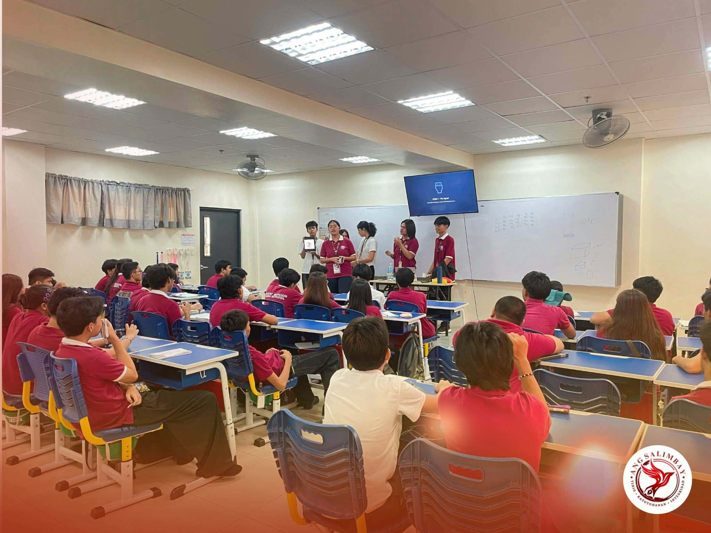

Pinakabagong Balita

Ang Salimbay Nanghikayat!
Opisyal na publikasyong Filipino ng paaralan, nagsagawa ng pag-aanunsyo ang mga kasapi nito upang hikayatin ang bawat mag-aaral ng Sucat Senior High School na makilahok sa mga gawaing pampamahayag..
Bagong Performing Arts Hall Pinasinayaan sa SSHS
Pormal nang binuksan ang bagong Performing Arts Hall ng Sucat Senior High School (SSHS) sa isinagawang pasinaya na may temang “𝙒𝙝𝙚𝙧𝙚 𝘼𝙧𝙩 𝘾𝙤𝙢𝙚𝙨 𝘼𝙡𝙞𝙫𝙚” nitong Hunyo 22, 2026, alas-10:00 ng umaga.
Career Guidance sa SSHS!
Career Support Program para sa mga mag-aaral ng Sucat Senior High School (SSHS) sa pangunguna ng Soroptimist International Manila Diamond (SIMD) – Dream It, Be It (DIBI) Organization ngayong Hunyo 25, 2026.
Mga Kategorya
Balita
Editoryal
Lathalain
Column
Isports
Agham at Teknolohiya
Editorial Cartooning
Tungkol sa Ang Salimbay
Ang Ang Salimbay ay ang opisyal na pahayagang Filipino ng
Sucat Senior High School. Layunin nitong maging mapagkakatiwalaang
daluyan ng balita, impormasyon, opinyon, at mga akdang pampahayagan na
sumasalamin sa boses ng mga mag-aaral at ng komunidad ng paaralan.